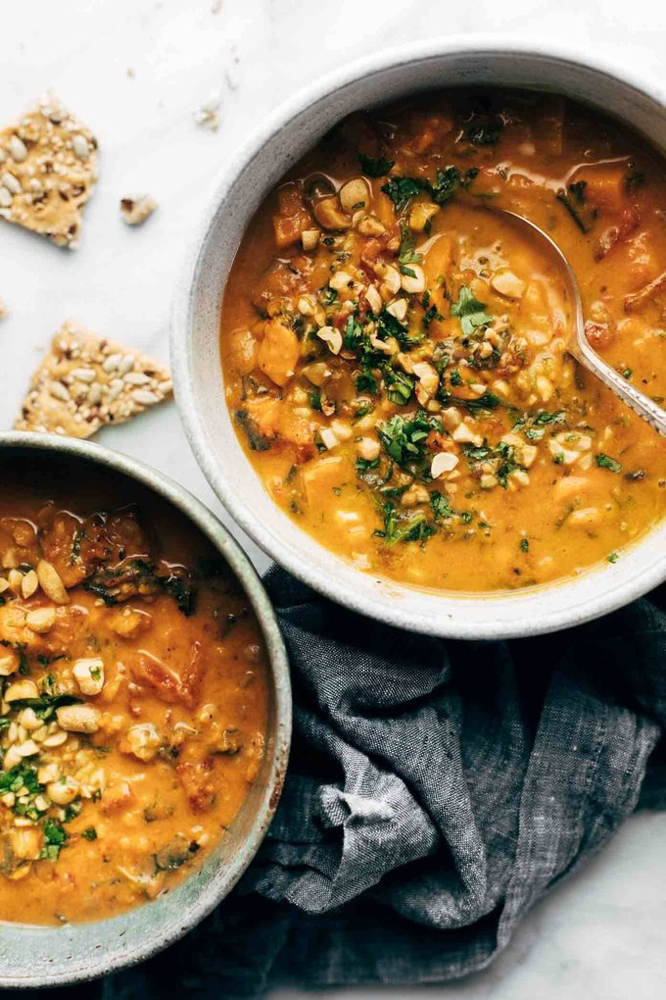

Peanut Soup

Description
You guys, this soup! Stew? It's kind of both. It depends on how you make it and how much liquid you add, but EITHER WAY IT IS SO DARN GOOD. It literally checks all the boxes - creamy, satisfying texture; extremely awesome flavor; super nutritious; doesn't take five and a half days to make. It doesn't have meat, but girl, if you want meat, add meat! Not huge on kale? Swap for spinach. These are my favorite kinds of recipes - ones that just kind of let you do whatever you want to do and make it your very own./p>
Ingredients
- sweet potatoes
- peanuts / peanut butter
- fire roasted tomatoes
- garlic
- jalapeño
- cilantro
- olive oil
- onion
- light coconut milk
- water
- salt
- curry or turmeric
- kale
Steps
- Heat the olive oil in a large soup pot over medium heat and add the onion, garlic, and jalapeño. Saute until soft and fragrant.
- Add sweet potatoes. I like to brown them a little bit with the aromatics to get them nice and flavorful.
- Add tomatoes, coconut milk, water, spices, and peanuts. Simmer until sweet potatoes are fork-tender.
- Add peanut butter and kale. Simmer until everything is thick, creamy, and delicious. Top with more peanuts and a little cilantro if you’re obsessed like me.